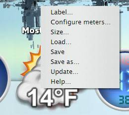
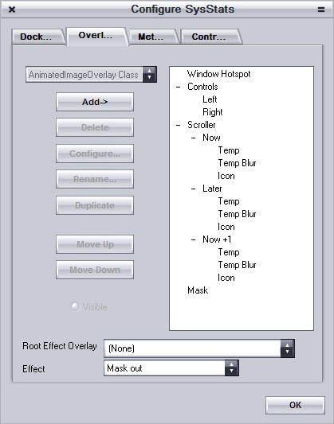
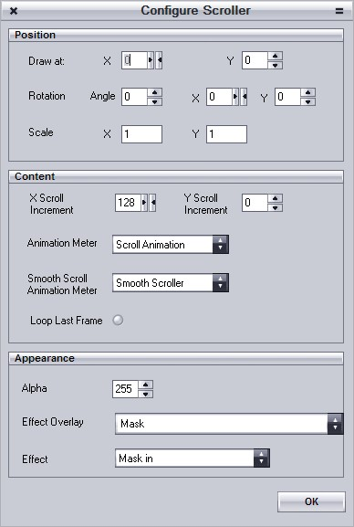
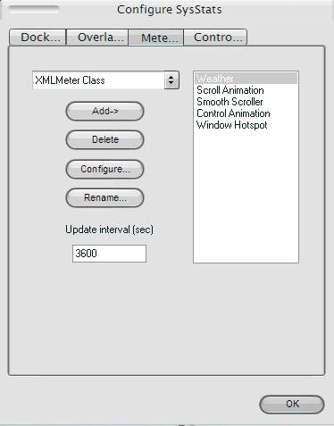
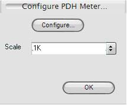
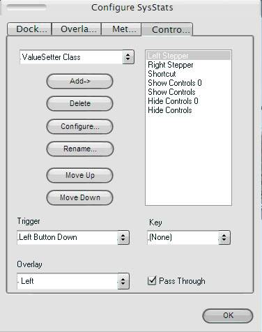

Quick-Start
Contents:
Using
an off-the-shelf config. 1
Modifying
an Existing Config. 1
Creating
a New Config. 1
Overlays. 2
Meters. 2
Displaying
the Value of a Meter 3
Controllers. 3
If you’ve got this far then you’ve seen the Big Blue
Question mark. Now you have to tell SysStats what you want it to do. You’ve now
got three choices:
- Use an
off-the-shelf config.
- Modify
an existing config.
- Make
your own ‘config’.
- Right-click
on the BBQ (Big Blue Question mark). You will see this menu (but
youprobably already have. Right?):

- Select ‘Load…’ from the menu. This will present
you with a list of configs that you can load (e.g. CPU.ini).
- Open
the config you want.
- That’s
it!
Modifying an Existing Config
If you want to modify an existing config, maybe change the
icon, use a different font or change the colors you can.
- Firstly
decide if you want to keep the original config. If you do you should do a
‘Save As…’ before you start tweaking:
- Right
click on the docklet/desklet and select ‘Save As…’ from the menu.
- Enter
a new filename (with or without the .ini extension).
- Hit
‘Save’.
- Now
right-click on the docklet/desklet and select ‘Configure…’. You will see a
dialog with four tabs labeled:
- You
can use these tabs to make simple changes to the appearance of the docklet
or you can use them to turn the docklet into something else entirely! If
all you want to do is change the appearance, you will probably just use
the Overlays
tab.
This is actually no different than Modifying an Existing Config – you
just have more work to do J
Overlays
An overlay is
something you can see. It might be an image, it might be text or it might be a
graph. Open up the SysStats config dialog (right click on a docklet and select
‘Configure…’ from the popup menu), then hit the Overlays tab. You will see the following dialog:

- The Overlays tab has a list of all of
the overlays in the docklet on the right-hand side. If you click on one of
the overlays in the list, the combobox on the left of the list will change
to show you what type of overlay it is and all of the buttons on the
dialog will light up J.
The main button of interest here is the one labeled ‘Configure…’. Press
it.
- When
you press that button you will get a dialog specifically for that type overlay.
Here is the one for a scroller overlay:

- You
can use this to change the font, change the color, change the size, move it
around, rotate it, make it translucent, set a clipping rectangle, etc.
etc. Try it.
- Overlays
are drawn in a specific order – from bottom to top – so the top most
overlay in the list appears at the top of the pile. You can move them
around in the list. Select one and use the Up and Down buttons
to change the order.
- Some
overlays don’t draw anything on their own. These overlays – called Composite overlays – can contain
other overlays and change the way that their child overlays are drawn. You can use a simple CompositeOverlay to group a bunch
of other overlays together and then move them around, rotate them etc as a
single unit.
- Putting
an overlay inside a composite overlay is easy – just nudge it in with the Up and Down buttons. You can put composite overlays inside composite
overlays if you want.
- The
point of overlays is to display something. Most overlays can easily be set
to display a fixed value. E.g. the ImageOverlay
can be set to display a fixed image – just set the Path to be the path of an image. But the whole point of SysStats is that you can display
changing values. For this, you need to use Meters.
Meters
A meter is
something that holds information that you want to display. This information
usually changes over time, and when it does the meter will let SysStats know and SysStats will update its display (in fact many meters aren’t very
good at updating themselves, so SysStats
has to prod them). Open up the SysStats config dialog (right click on a docklet
and select ‘Configure…’ from the popup menu), then hit the Meters tab.

- The Meters tab has a list of all of the
meters in the docklet on the right-hand side. If you click on one of the
meters in the list, the combobox on the left of the list will change to
show you what type of meter it is and all of the buttons on the dialog
will light up J.
The main button of interest here is the one labeled ‘Configure…’. Press
it.
- When
you press that button you will get a dialog specifically for that type
meter. Here is the one for a PDH meter:

- This
is pretty simple – it has yet another ‘Configure’ button and a Scale field. PDH is a standard
Microsoft meter, it can be used to monitor many aspects of your PC.
Because it is a standard meter Microsoft has its own dialog for it – hence
the extra ‘configure’ button. Unfortunately Microsoft’s dialog isn’t quite
as simple L.
SysStats allows you to ‘scale’ the raw value from PDH – typically you
would convert bytes to GB or MB using the ‘scale’ value.
- You
will notice that all meters have
an Interval associated with
them. This is how often, in seconds, SysStats asks the meter if its value
has changed. You can set this value to less then 1 if you want. If you set
it to 0 SysStats never asks the
meter if its value has changed. This value is used for meters that update themselves (yes – there are some).
You use Overlays to display the value of a Meter. Open up
the SysStats config dialog (right click on a docklet and select ‘Configure…’
from the popup menu).
- Hit
the Overlays tab, select one of
them and hit ‘Configure…’. You will notice that they all have a combobox
labeled ‘Meter’ and a field labeled ‘Selector’.
- The
‘Meter’ combobox shows which meter the overlay will ask for a value.
- The
‘Selector’ field is used for some meters that can hold more than one
value. It tells the meter which of the many values it holds that the
overlay wants.
- So
the thing is, some meters hold strings, some floating point numbers and
some decimal numbers.
- Some
overlays can only use one type of data – you don’t need to worry about
these, they get the meter to provide the right type of value if they can.
- Other
overlays (e.g. Text and Image) give you more control over
how you display the value. For these meters you can use special strings
(in the Format and Path fields respectively) to tell
the overlay how to use the value. For example the PDH meter uses floating
point numbers. You can provide a string of %0.f in the Text
overlay to display it with no decimal places.
- If
you make the Path of an image
incorporate the value of a meter, you can change the image that is
displayed based on the value of a meter – if the image isn’t found nothing
is displayed. You can use this to only display an image if a meter has a
specific value.
Controllers
Controllers can be used to make things happen (e.g. run an
application, animate an image, control a media player, open a hyperlink etc.).
They can do this when you interact
with the docklet (e.g. by clicking on part of it or dropping a file on it), or
when something else does (e.g. a timer goes off). Open up the SysStats config
dialog (right click on a docklet and select ‘Configure…’ from the popup menu),
then hit the Controllers tab.

- The controllers tab has a list of all
of the controllers in the docklet on the right-hand side. If you click on
one of the controllers in the list, the combobox on the left of the list
will change to show you what type of controller it is and all of the
buttons on the dialog will light up J.
- Controllers
are triggered by an event. This can usually be any windows message (such
as a mouse left button down). If you select an existing controller you may
notice that the drop-down list labeled Trigger
changes to show you which windows message the selected controller is
triggered by.
- For
mouse messages you can also specify a modifier key that has to be pressed
at the same time for the controller to be triggered.
- All
controllers can also be associated with an Overlay. The controller will only be
triggered if the mouse pointer is over the overlay when the message
occurs. If you don’t specify an overlay, anywhere in the window will work.
- Some
controllers only respond to specific messages (such as the Timer and DropController). Setting a message for these controllers will
have no effect.
- Controllers
can be set to ‘pass through’ mode. When in this mode the controller will
allow other controllers to respond to the same trigger. Controllers are
examined from the top of the list down.